Design Effects on (log) Standard Error Estimates
2020-06-01
Last updated: 2020-06-10
Checks: 6 1
Knit directory: mcfa-para-est/
This reproducible R Markdown analysis was created with workflowr (version 1.6.2). The Checks tab describes the reproducibility checks that were applied when the results were created. The Past versions tab lists the development history.
The R Markdown is untracked by Git. To know which version of the R Markdown file created these results, you’ll want to first commit it to the Git repo. If you’re still working on the analysis, you can ignore this warning. When you’re finished, you can run wflow_publish to commit the R Markdown file and build the HTML.
Great job! The global environment was empty. Objects defined in the global environment can affect the analysis in your R Markdown file in unknown ways. For reproduciblity it’s best to always run the code in an empty environment.
The command set.seed(20190614) was run prior to running the code in the R Markdown file. Setting a seed ensures that any results that rely on randomness, e.g. subsampling or permutations, are reproducible.
Great job! Recording the operating system, R version, and package versions is critical for reproducibility.
Nice! There were no cached chunks for this analysis, so you can be confident that you successfully produced the results during this run.
Great job! Using relative paths to the files within your workflowr project makes it easier to run your code on other machines.
Great! You are using Git for version control. Tracking code development and connecting the code version to the results is critical for reproducibility.
The results in this page were generated with repository version eecb366. See the Past versions tab to see a history of the changes made to the R Markdown and HTML files.
Note that you need to be careful to ensure that all relevant files for the analysis have been committed to Git prior to generating the results (you can use wflow_publish or wflow_git_commit). workflowr only checks the R Markdown file, but you know if there are other scripts or data files that it depends on. Below is the status of the Git repository when the results were generated:
Ignored files:
Ignored: .Rhistory
Ignored: .Rproj.user/
Ignored: data/compiled_para_results.txt
Ignored: data/results_bias_est.csv
Ignored: data/results_bias_se.csv
Ignored: fig/
Ignored: manuscript/
Ignored: output/fact-cov-converge-largeN.pdf
Ignored: output/fact-cov-converge-medN.pdf
Ignored: output/fact-cov-converge-smallN.pdf
Ignored: output/loading-converge-largeN.pdf
Ignored: output/loading-converge-medN.pdf
Ignored: output/loading-converge-smallN.pdf
Ignored: references/
Ignored: sera-presentation/
Untracked files:
Untracked: analysis/ml-cfa-parameter-anova-estimates.Rmd
Untracked: analysis/ml-cfa-parameter-anova-relative-bias.Rmd
Untracked: analysis/ml-cfa-parameter-bias-latent-ICC.Rmd
Untracked: analysis/ml-cfa-parameter-bias-observed-ICC.Rmd
Untracked: analysis/ml-cfa-parameter-bias-pub-figure.Rmd
Untracked: analysis/ml-cfa-parameter-convergence-ARD-L1-factor-covariance.Rmd
Untracked: analysis/ml-cfa-parameter-convergence-ARD-L2-factor-covariance.Rmd
Untracked: analysis/ml-cfa-parameter-convergence-ARD-L2-factor-variance.Rmd
Untracked: analysis/ml-cfa-parameter-convergence-ARD-L2-residual-variance.Rmd
Untracked: analysis/ml-cfa-parameter-convergence-ARD-factor-loadings.Rmd
Untracked: analysis/ml-cfa-parameter-convergence-ARD-latent-ICC.Rmd
Untracked: analysis/ml-cfa-parameter-convergence-ARD-observed-ICC.Rmd
Untracked: analysis/ml-cfa-parameter-convergence-correlation-pubfigure.Rmd
Untracked: analysis/ml-cfa-parameter-convergence-trace-plots-factor-loadings.Rmd
Untracked: analysis/ml-cfa-standard-error-anova-logSE.Rmd
Untracked: analysis/ml-cfa-standard-error-anova-relative-bias.Rmd
Untracked: analysis/ml-cfa-standard-error-bias-factor-loadings.Rmd
Untracked: analysis/ml-cfa-standard-error-bias-level1-factor-covariances.Rmd
Untracked: analysis/ml-cfa-standard-error-bias-level2-factor-covariances.Rmd
Untracked: analysis/ml-cfa-standard-error-bias-level2-factor-variances.Rmd
Untracked: analysis/ml-cfa-standard-error-bias-level2-residual-variances.Rmd
Untracked: analysis/ml-cfa-standard-error-bias-overview.Rmd
Untracked: code/r_functions.R
Untracked: renv.lock
Untracked: renv/
Unstaged changes:
Modified: .gitignore
Modified: analysis/index.Rmd
Modified: analysis/ml-cfa-convergence-summary.Rmd
Modified: analysis/ml-cfa-parameter-bias-factor-loadings.Rmd
Modified: analysis/ml-cfa-parameter-bias-level1-factor-covariances.Rmd
Modified: analysis/ml-cfa-parameter-bias-level2-factor-covariances.Rmd
Modified: analysis/ml-cfa-parameter-bias-level2-factor-variances.Rmd
Modified: analysis/ml-cfa-parameter-bias-level2-residual-variances.Rmd
Modified: analysis/ml-cfa-parameter-convergence-correlation-factor-loadings.Rmd
Modified: code/get_data.R
Modified: code/load_packages.R
Note that any generated files, e.g. HTML, png, CSS, etc., are not included in this status report because it is ok for generated content to have uncommitted changes.
There are no past versions. Publish this analysis with wflow_publish() to start tracking its development.
The purpose of this page is to identify the impact of design factors on standard error estimates. This is done using analysis of variance (factorial) on the estimates of standard Error (converted to log scale).
Packages and Set-Up
rm(list=ls())
source(paste0(getwd(),"/code/load_packages.R"))
source(paste0(getwd(),"/code/get_data.R"))
source(paste0(getwd(),"/code/r_functions.R"))
# general options
theme_set(theme_bw())
options(digits=3)
##Chunk iptions
knitr::opts_chunk$set(out.width="225%")Data Management
pvec <- c(paste0('selambda1',1:6), paste0('selambda2',6:10), 'sepsiW12','sepsiB1', 'sepsiB2', 'sepsiB12', paste0('sethetaB',1:10))
# take out non-converged/inadmissible cases
sim_results <- filter(sim_results, Converge==1, Admissible==1)
# Set conditions levels as categorical values
sim_results <- sim_results %>%
mutate(N1 = factor(N1, c("5", "10", "30")),
N2 = factor(N2, c("30", "50", "100", "200")),
ICC_OV = factor(ICC_OV, c("0.1","0.3", "0.5")),
ICC_LV = factor(ICC_LV, c("0.1", "0.5")))
# convert to long format
long_results <- sim_results[,c("Condition", "Replication", "N1", "N2", "ICC_OV", "ICC_LV", "Estimator", pvec)] %>%
pivot_longer(
cols = all_of(pvec),
names_to = "Parameter",
values_to = "EstimateSE"
) %>%
mutate(logSE = log(EstimateSE))Now, we are only going to do ANOVA on the estimates (log).
# Object to Story Results
resultsList <- list()ANOVA and effect sizes for distributional differences
For this simulation experiment, there were 5 factors systematically varied. Of these 5 factors, 4 were factors influencing the observed data and 1 were factors pertaining to estimation and model fitting. The factors were
- Level-1 sample size (5, 10, 30)
- Level-2 sample size (30, 50, 100, 200)
- Observed indicator ICC (.1, .3, .5)
- Latent variable ICC (.1, .5)
- Model estimator (MLR, ULSMV, WLSMV)
For each parameter SE, an analysis of variance (ANOVA) was conducted in order to test how much influence each of these design factors.
General Linear Model investigated for estimated SE was: \[ Y_{ijklmn} = \mu + \alpha_{j} + \beta_{k} + \gamma_{l} + \delta_m + \theta_n +\\ (\alpha\beta)_{jk} + (\alpha\gamma)_{jl}+ (\alpha\delta)_{jm} + (\alpha\theta)_{jn}+ \\ (\beta\gamma)_{kl}+ (\beta\delta)_{km} + (\beta\theta)_{kn}+ (\gamma\delta)_{lm} + + (\gamma\theta)_{ln} + (\delta\theta)_{mn} + \varepsilon_{ijklmn} \] where
- \(\mu\) is the grand mean,
- \(\alpha_{j}\) is the effect of Level-1 sample size,
- \(\beta_{k}\) is the effect of Level-2 sample size,
- \(\gamma_{l}\) is the effect of Observed indicator ICC,
- \(\delta_m\) is the effect of Latent variable ICC,
- \(\theta_n\) is the effect of Model estimator ,
- \((\alpha\beta)_{jk}\) is the interaction between Level-1 sample size and Level-2 sample size,
- \((\alpha\gamma)_{jl}\) is the interaction between Level-1 sample size and Observed indicator ICC,
- \((\alpha\delta)_{jm}\) is the interaction between Level-1 sample size and Latent variable ICC,
- \((\alpha\theta)_{jn}\) is the interaction between Level-1 sample size and Model estimator ,
- \((\beta\gamma)_{kl}\) is the interaction between Level-2 sample size and Observed indicator ICC,
- \((\beta\delta)_{km}\) is the interaction between Level-2 sample size and Latent variable ICC,
- \((\beta\theta)_{kn}\) is the interaction between Level-2 sample size and Model estimator ,
- \((\gamma\delta)_{lm}\) is the interaction between Observed indicator ICC and Latent variable ICC,
- \((\gamma\theta)_{ln}\) is the interaction between Observed indicator ICC and Model estimator ,
- \((\delta\theta)_{mn}\) is the interaction between Latent variable ICC and Model estimator , and
- \(\varepsilon_{ijklmn}\) is the residual error for the \(i^{th}\) observed SE estimate.
Note that for most of these terms there are actually 2 or 3 terms actually estimated. These additional terms are because of the categorical nature of each effect so we have to create “reference” groups and calculate the effect of being in a group other than the reference group. Higher order interactions were omitted for clarity of interpretation of the model. If interested in higher-order interactions, please see Maxwell and Delaney (2004).
The real reason the higher order interaction was omitted: Because I have no clue how to interpret a 5-way interaction (whatever the heck that is), I am limiting the ANOVA to all bivariate interactions.
Diagnostics for factorial ANOVA:
- Independence of Observations
- Normality of residuals across cells for the design
- Homogeneity of variance across cells
Independence of observations is by design, where these data were randomly generated from a known population and observations are across replications and are independent. The normality assumptions is that the residuals of the models are normally distributed across the design cells. The normality assumption is tested by investigation by Shapiro-Wilks Test, the K-S test, and visual inspection of QQ-plots and histograms. The equality of variance is checked through Levene’s test across all the different conditions/groupings. Furthermore, the plots of the residuals are also indicative of the equality of variance across groups as there should be no apparent pattern to the residual plots.
Factor Loadings Standard Error
Assumption Checking
sdat <- filter(long_results, Parameter %like% "lambda")
sdat <- sdat %>%
group_by(Replication, N1, N2, ICC_OV, ICC_LV, Estimator) %>%
summarise(logSE = mean(logSE))
# first, look at summary of logSE Estimates
boxplot(sdat$logSE)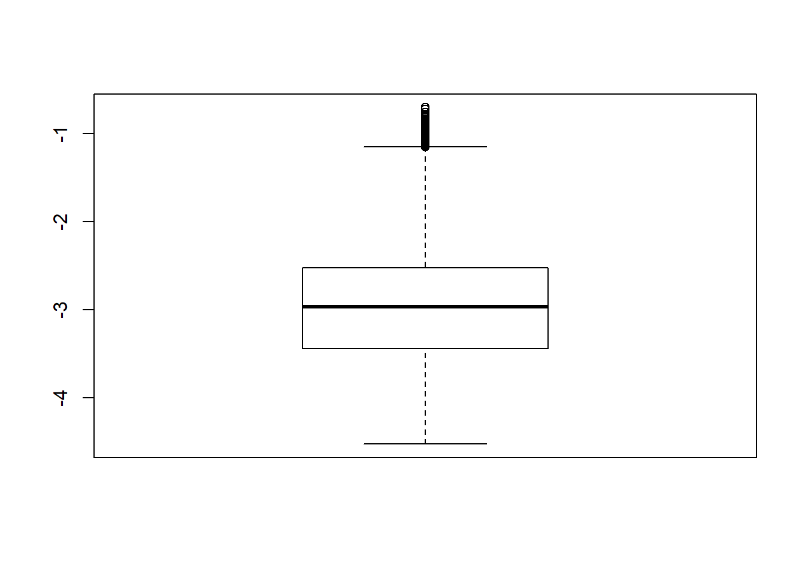
## model factors...
flist <- c('N1', 'N2', 'ICC_OV', 'ICC_LV', 'Estimator')
## Check assumptions
anova_assumptions_check(
sdat, 'logSE', factors = flist,
model = as.formula('logSE ~ N1 + N2 + ICC_OV + ICC_LV + Estimator + N1:N2 + N1:ICC_OV + N1:ICC_LV + N1:Estimator + N2:ICC_OV + N2:ICC_LV + N2:Estimator + ICC_OV:ICC_LV + ICC_OV:Estimator + ICC_LV:Estimator'))
=============================
Tests and Plots of Normality: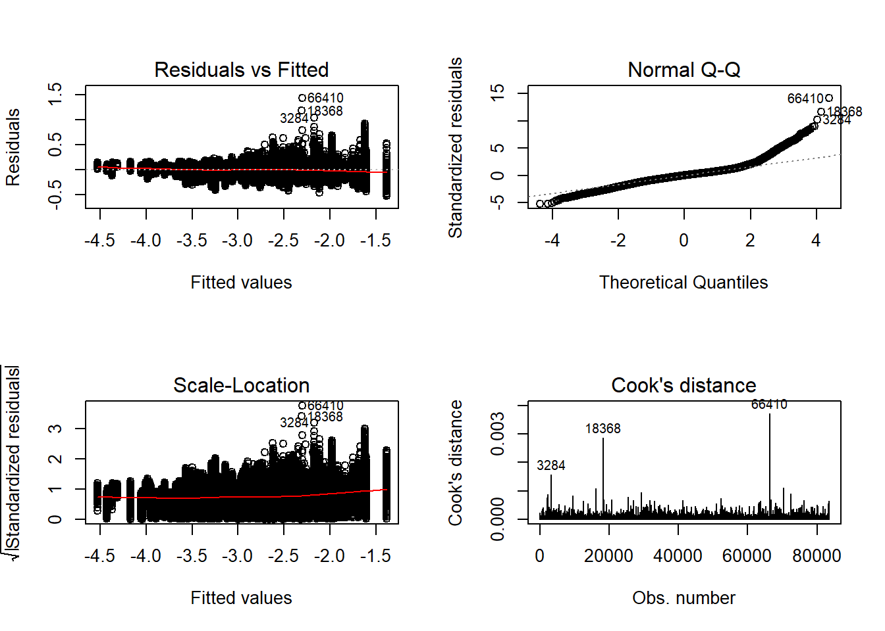
Shapiro-Wilks Test of Normality of Residuals:
Shapiro-Wilk normality test
data: res
W = 1, p-value <2e-16
K-S Test for Normality of Residuals:
One-sample Kolmogorov-Smirnov test
data: aov.out$residuals
D = 0.4, p-value <2e-16
alternative hypothesis: two-sided`stat_bin()` using `bins = 30`. Pick better value with `binwidth`.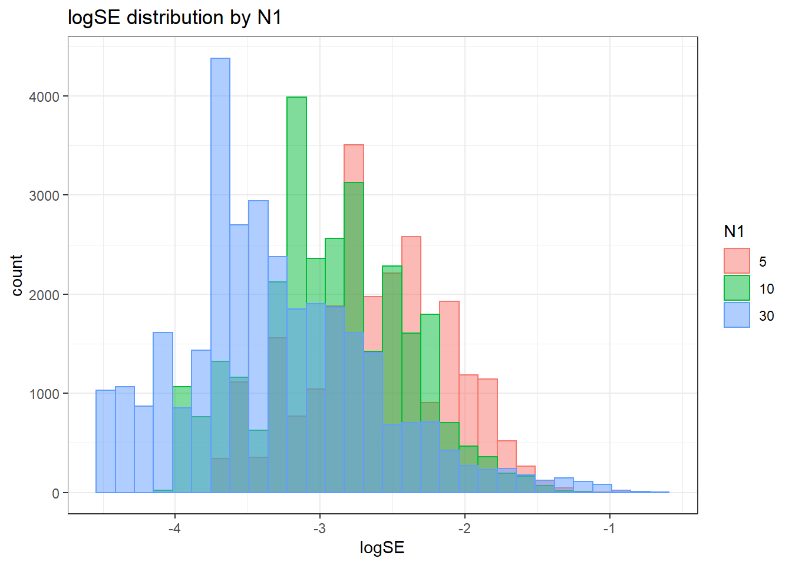
`stat_bin()` using `bins = 30`. Pick better value with `binwidth`.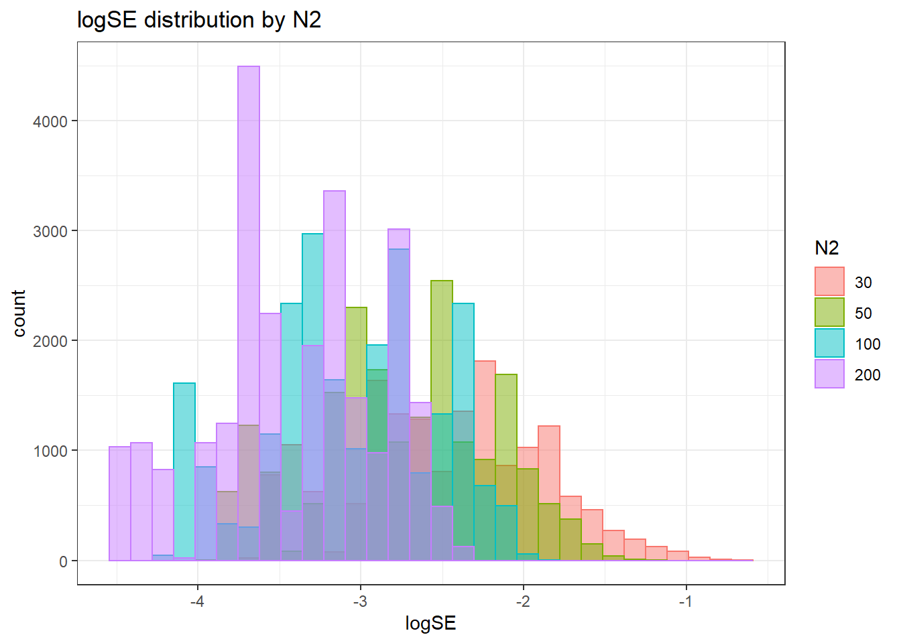
`stat_bin()` using `bins = 30`. Pick better value with `binwidth`.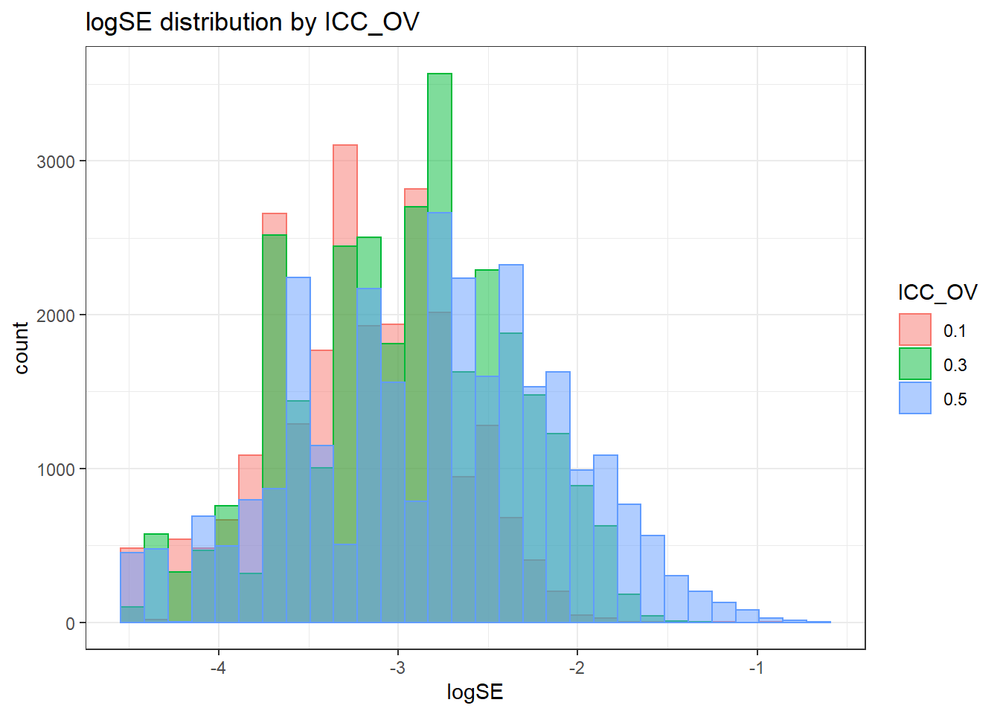
`stat_bin()` using `bins = 30`. Pick better value with `binwidth`.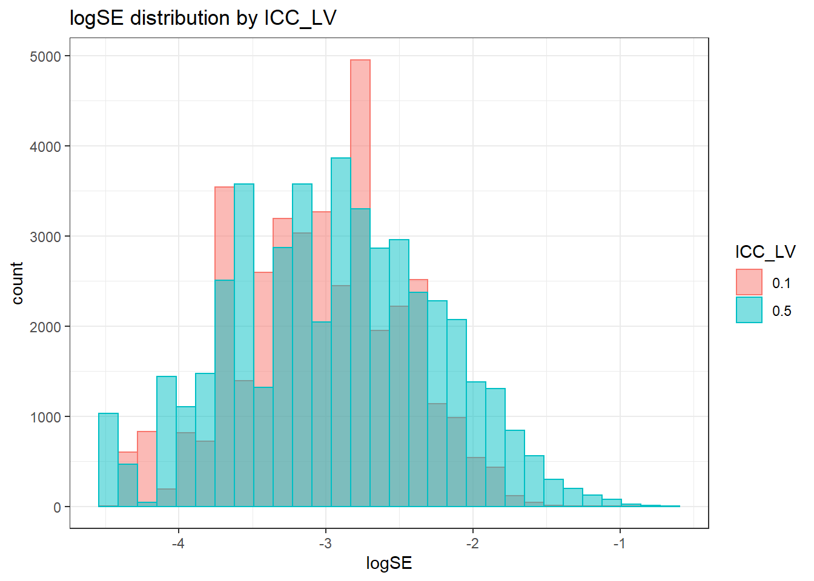
`stat_bin()` using `bins = 30`. Pick better value with `binwidth`.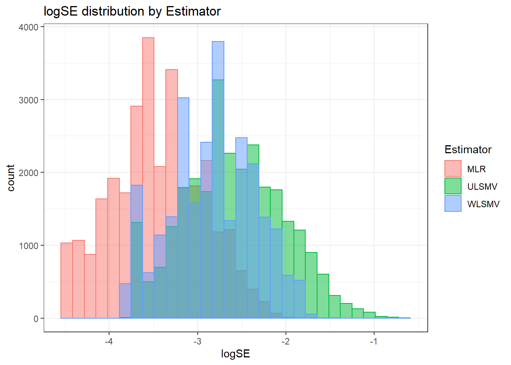
=============================
Tests of Homogeneity of Variance
Levenes Test: N1
Levene's Test for Homogeneity of Variance (center = "mean")
Df F value Pr(>F)
group 2 998 <2e-16 ***
83507
---
Signif. codes: 0 '***' 0.001 '**' 0.01 '*' 0.05 '.' 0.1 ' ' 1
Levenes Test: N2
Levene's Test for Homogeneity of Variance (center = "mean")
Df F value Pr(>F)
group 3 83.5 <2e-16 ***
83506
---
Signif. codes: 0 '***' 0.001 '**' 0.01 '*' 0.05 '.' 0.1 ' ' 1
Levenes Test: ICC_OV
Levene's Test for Homogeneity of Variance (center = "mean")
Df F value Pr(>F)
group 2 1717 <2e-16 ***
83507
---
Signif. codes: 0 '***' 0.001 '**' 0.01 '*' 0.05 '.' 0.1 ' ' 1
Levenes Test: ICC_LV
Levene's Test for Homogeneity of Variance (center = "mean")
Df F value Pr(>F)
group 1 2172 <2e-16 ***
83508
---
Signif. codes: 0 '***' 0.001 '**' 0.01 '*' 0.05 '.' 0.1 ' ' 1
Levenes Test: Estimator
Levene's Test for Homogeneity of Variance (center = "mean")
Df F value Pr(>F)
group 2 314 <2e-16 ***
83507
---
Signif. codes: 0 '***' 0.001 '**' 0.01 '*' 0.05 '.' 0.1 ' ' 1ANOVA Results
model = as.formula('logSE ~ N1 + N2 + ICC_OV + ICC_LV + Estimator + N1:N2 + N1:ICC_OV + N1:ICC_LV + N1:Estimator + N2:ICC_OV + N2:ICC_LV + N2:Estimator + ICC_OV:ICC_LV + ICC_OV:Estimator + ICC_LV:Estimator')
fit <- aov(model, data = sdat)
fit.out <- summary(fit)
fit.out Df Sum Sq Mean Sq F value Pr(>F)
N1 2 6775 3387 3.31e+05 <2e-16 ***
N2 3 10794 3598 3.52e+05 <2e-16 ***
ICC_OV 2 1020 510 4.98e+04 <2e-16 ***
ICC_LV 1 0 0 5.74e+00 0.017 *
Estimator 2 12269 6135 6.00e+05 <2e-16 ***
N1:N2 6 39 6 6.35e+02 <2e-16 ***
N1:ICC_OV 4 185 46 4.51e+03 <2e-16 ***
N1:ICC_LV 2 231 116 1.13e+04 <2e-16 ***
N1:Estimator 4 298 75 7.29e+03 <2e-16 ***
N2:ICC_OV 6 24 4 3.97e+02 <2e-16 ***
N2:ICC_LV 3 9 3 2.80e+02 <2e-16 ***
N2:Estimator 6 44 7 7.19e+02 <2e-16 ***
ICC_OV:ICC_LV 2 240 120 1.17e+04 <2e-16 ***
ICC_OV:Estimator 4 887 222 2.17e+04 <2e-16 ***
ICC_LV:Estimator 2 734 367 3.59e+04 <2e-16 ***
Residuals 83460 854 0
---
Signif. codes: 0 '***' 0.001 '**' 0.01 '*' 0.05 '.' 0.1 ' ' 1resultsList[["FactorLoadings"]] <- cbind(omega2(fit.out), p_omega2(fit.out))
resultsList[["FactorLoadings"]] omega^2 partial-omega^2
N1 0.1969 0.8880
N2 0.3137 0.9266
ICC_OV 0.0296 0.5441
ICC_LV 0.0000 0.0001
Estimator 0.3566 0.9349
N1:N2 0.0011 0.0436
N1:ICC_OV 0.0054 0.1777
N1:ICC_LV 0.0067 0.2130
N1:Estimator 0.0087 0.2587
N2:ICC_OV 0.0007 0.0277
N2:ICC_LV 0.0002 0.0099
N2:Estimator 0.0013 0.0491
ICC_OV:ICC_LV 0.0070 0.2190
ICC_OV:Estimator 0.0258 0.5095
ICC_LV:Estimator 0.0213 0.4622Level-1 factor Covariance Standard Error
Assumption Checking
sdat <- filter(long_results, Parameter %like% "psiW")
sdat <- sdat %>%
group_by(Replication, N1, N2, ICC_OV, ICC_LV, Estimator) %>%
summarise(logSE = mean(logSE))
# first, look at summary of logSE Estimates
boxplot(sdat$logSE)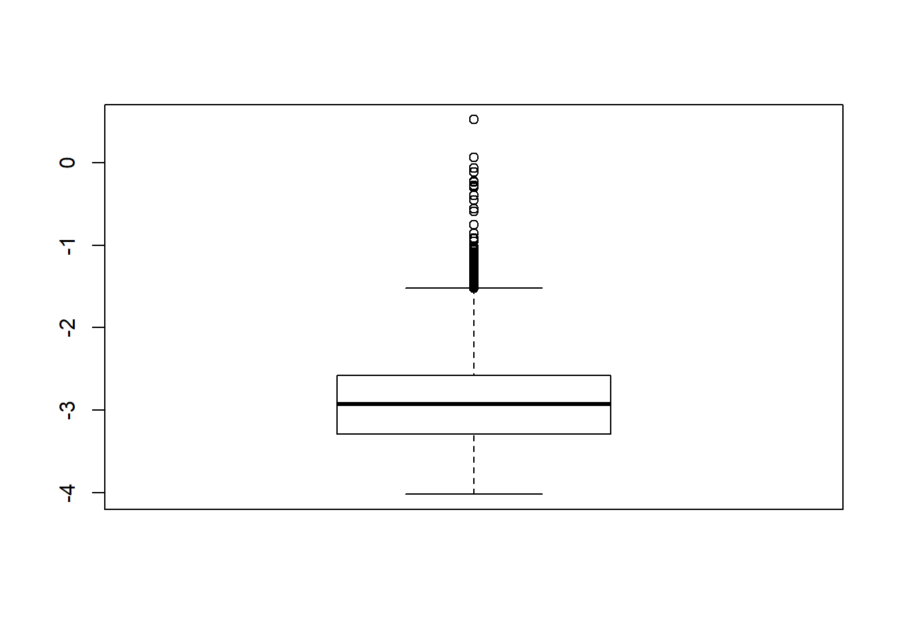
## model factors...
flist <- c('N1', 'N2', 'ICC_OV', 'ICC_LV', 'Estimator')
## Check assumptions
anova_assumptions_check(
sdat, 'logSE', factors = flist,
model = as.formula('logSE ~ N1 + N2 + ICC_OV + ICC_LV + Estimator + N1:N2 + N1:ICC_OV + N1:ICC_LV + N1:Estimator + N2:ICC_OV + N2:ICC_LV + N2:Estimator + ICC_OV:ICC_LV + ICC_OV:Estimator + ICC_LV:Estimator'))
=============================
Tests and Plots of Normality:
Shapiro-Wilks Test of Normality of Residuals:
Shapiro-Wilk normality test
data: res
W = 0.9, p-value <2e-16
K-S Test for Normality of Residuals:Warning in ks.test(aov.out$residuals, "pnorm", alternative = "two.sided"): ties
should not be present for the Kolmogorov-Smirnov test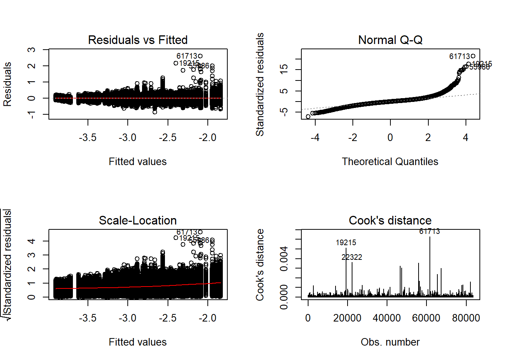
One-sample Kolmogorov-Smirnov test
data: aov.out$residuals
D = 0.4, p-value <2e-16
alternative hypothesis: two-sided`stat_bin()` using `bins = 30`. Pick better value with `binwidth`.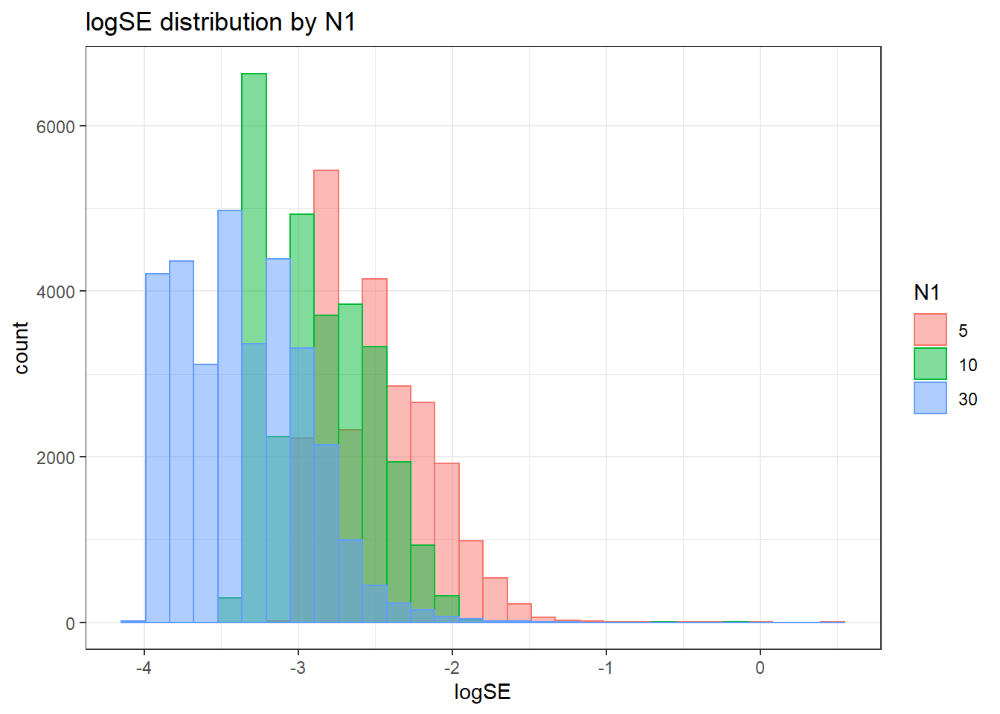
`stat_bin()` using `bins = 30`. Pick better value with `binwidth`.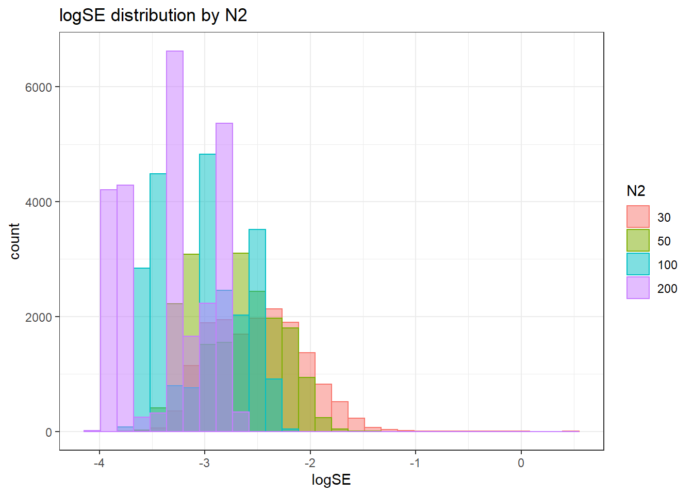
`stat_bin()` using `bins = 30`. Pick better value with `binwidth`.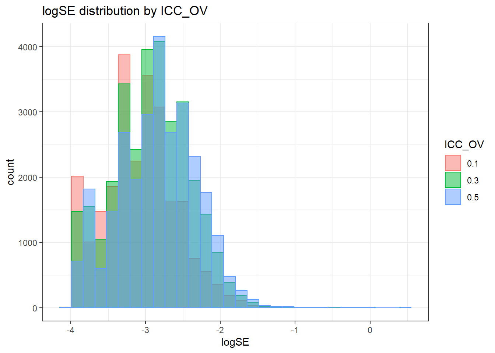
`stat_bin()` using `bins = 30`. Pick better value with `binwidth`.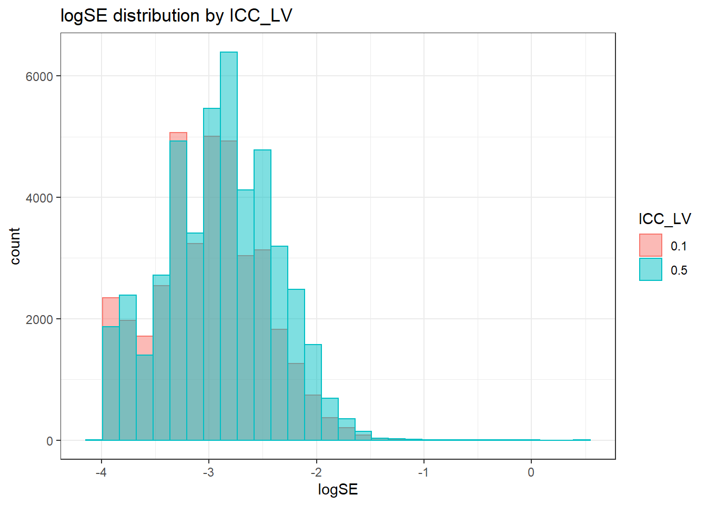
`stat_bin()` using `bins = 30`. Pick better value with `binwidth`.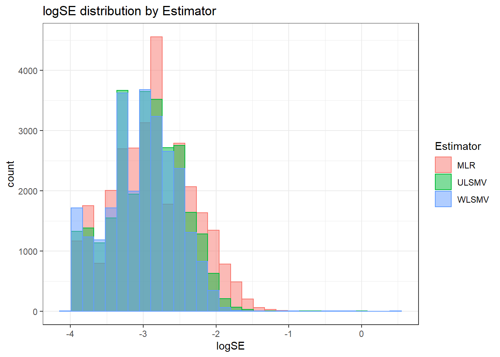
=============================
Tests of Homogeneity of Variance
Levenes Test: N1
Levene's Test for Homogeneity of Variance (center = "mean")
Df F value Pr(>F)
group 2 458 <2e-16 ***
83507
---
Signif. codes: 0 '***' 0.001 '**' 0.01 '*' 0.05 '.' 0.1 ' ' 1
Levenes Test: N2
Levene's Test for Homogeneity of Variance (center = "mean")
Df F value Pr(>F)
group 3 12.1 6.2e-08 ***
83506
---
Signif. codes: 0 '***' 0.001 '**' 0.01 '*' 0.05 '.' 0.1 ' ' 1
Levenes Test: ICC_OV
Levene's Test for Homogeneity of Variance (center = "mean")
Df F value Pr(>F)
group 2 87.4 <2e-16 ***
83507
---
Signif. codes: 0 '***' 0.001 '**' 0.01 '*' 0.05 '.' 0.1 ' ' 1
Levenes Test: ICC_LV
Levene's Test for Homogeneity of Variance (center = "mean")
Df F value Pr(>F)
group 1 30.7 3e-08 ***
83508
---
Signif. codes: 0 '***' 0.001 '**' 0.01 '*' 0.05 '.' 0.1 ' ' 1
Levenes Test: Estimator
Levene's Test for Homogeneity of Variance (center = "mean")
Df F value Pr(>F)
group 2 293 <2e-16 ***
83507
---
Signif. codes: 0 '***' 0.001 '**' 0.01 '*' 0.05 '.' 0.1 ' ' 1ANOVA Results
model = as.formula('logSE ~ N1 + N2 + ICC_OV + ICC_LV + Estimator + N1:N2 + N1:ICC_OV + N1:ICC_LV + N1:Estimator + N2:ICC_OV + N2:ICC_LV + N2:Estimator + ICC_OV:ICC_LV + ICC_OV:Estimator + ICC_LV:Estimator')
fit <- aov(model, data = sdat)
fit.out <- summary(fit)
fit.out Df Sum Sq Mean Sq F value Pr(>F)
N1 2 10484 5242 351494.5 <2e-16 ***
N2 3 9323 3108 208380.0 <2e-16 ***
ICC_OV 2 113 57 3793.0 <2e-16 ***
ICC_LV 1 17 17 1159.4 <2e-16 ***
Estimator 2 137 69 4607.0 <2e-16 ***
N1:N2 6 46 8 510.5 <2e-16 ***
N1:ICC_OV 4 72 18 1211.2 <2e-16 ***
N1:ICC_LV 2 21 10 699.0 <2e-16 ***
N1:Estimator 4 95 24 1584.6 <2e-16 ***
N2:ICC_OV 6 27 4 300.0 <2e-16 ***
N2:ICC_LV 3 5 2 122.5 <2e-16 ***
N2:Estimator 6 64 11 718.6 <2e-16 ***
ICC_OV:ICC_LV 2 2 1 65.2 <2e-16 ***
ICC_OV:Estimator 4 35 9 591.8 <2e-16 ***
ICC_LV:Estimator 2 16 8 520.8 <2e-16 ***
Residuals 83460 1245 0
---
Signif. codes: 0 '***' 0.001 '**' 0.01 '*' 0.05 '.' 0.1 ' ' 1resultsList[["Level1-FactorCovariance"]] <- cbind(omega2(fit.out), p_omega2(fit.out))
resultsList[["Level1-FactorCovariance"]] omega^2 partial-omega^2
N1 0.4831 0.8938
N2 0.4296 0.8822
ICC_OV 0.0052 0.0833
ICC_LV 0.0008 0.0137
Estimator 0.0063 0.0994
N1:N2 0.0021 0.0353
N1:ICC_OV 0.0033 0.0548
N1:ICC_LV 0.0010 0.0164
N1:Estimator 0.0044 0.0705
N2:ICC_OV 0.0012 0.0210
N2:ICC_LV 0.0003 0.0043
N2:Estimator 0.0030 0.0490
ICC_OV:ICC_LV 0.0001 0.0015
ICC_OV:Estimator 0.0016 0.0275
ICC_LV:Estimator 0.0007 0.0123Level-2 factor (co)variances Standard Error
Assumption Checking
sdat <- filter(long_results, Parameter %like% "psiB")
sdat <- sdat %>%
group_by(Replication, N1, N2, ICC_OV, ICC_LV, Estimator) %>%
summarise(logSE = mean(logSE))
# first, look at summary of logSE Estimates
boxplot(sdat$logSE)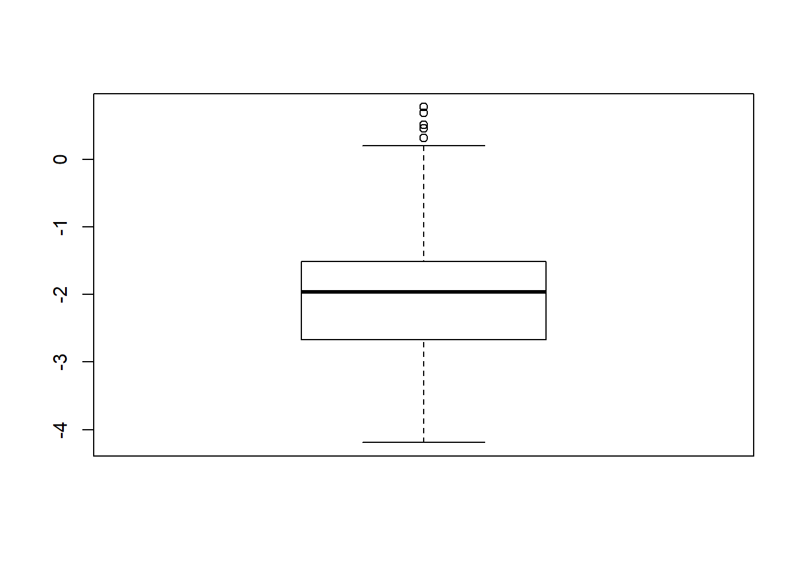
## model factors...
flist <- c('N1', 'N2', 'ICC_OV', 'ICC_LV', 'Estimator')
## Check assumptions
anova_assumptions_check(
sdat, 'logSE', factors = flist,
model = as.formula('logSE ~ N1 + N2 + ICC_OV + ICC_LV + Estimator + N1:N2 + N1:ICC_OV + N1:ICC_LV + N1:Estimator + N2:ICC_OV + N2:ICC_LV + N2:Estimator + ICC_OV:ICC_LV + ICC_OV:Estimator + ICC_LV:Estimator'))
=============================
Tests and Plots of Normality:
Shapiro-Wilks Test of Normality of Residuals:
Shapiro-Wilk normality test
data: res
W = 1, p-value <2e-16
K-S Test for Normality of Residuals:
One-sample Kolmogorov-Smirnov test
data: aov.out$residuals
D = 0.3, p-value <2e-16
alternative hypothesis: two-sided`stat_bin()` using `bins = 30`. Pick better value with `binwidth`.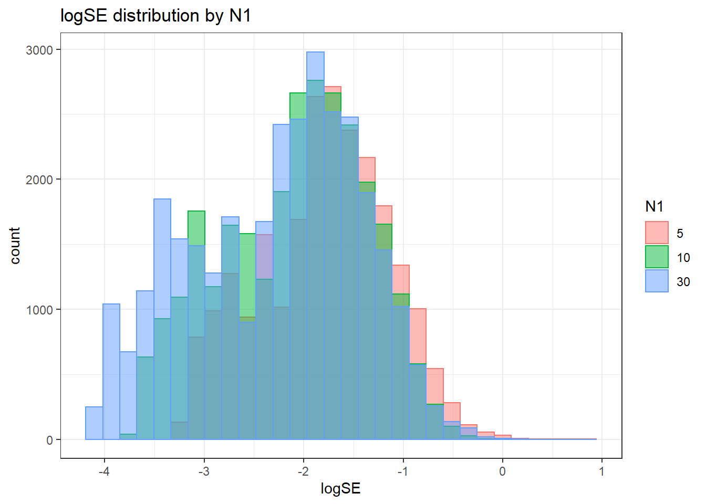
`stat_bin()` using `bins = 30`. Pick better value with `binwidth`.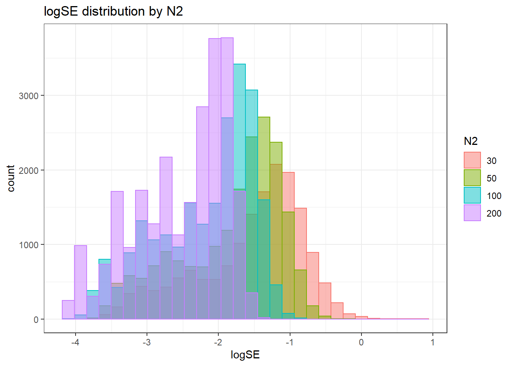
`stat_bin()` using `bins = 30`. Pick better value with `binwidth`.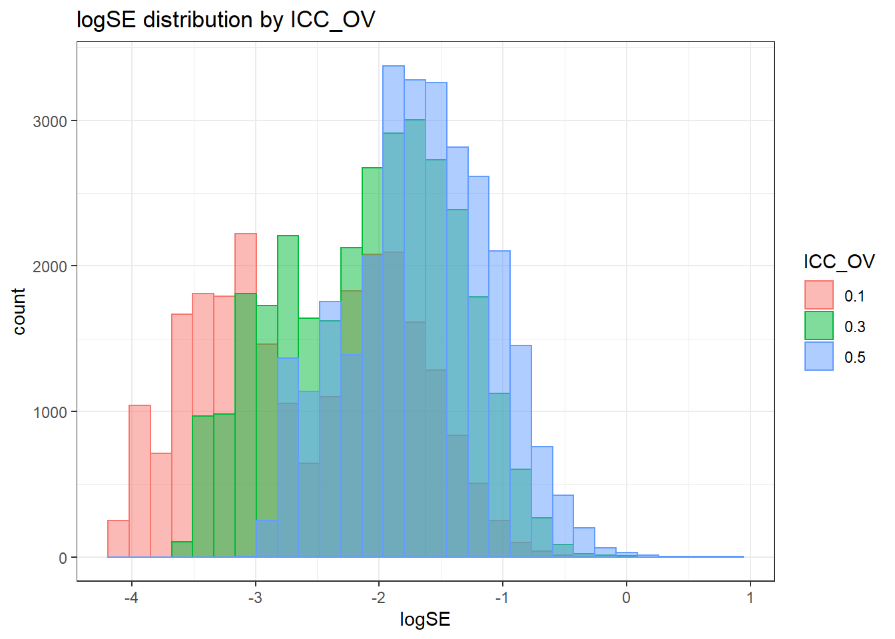
`stat_bin()` using `bins = 30`. Pick better value with `binwidth`.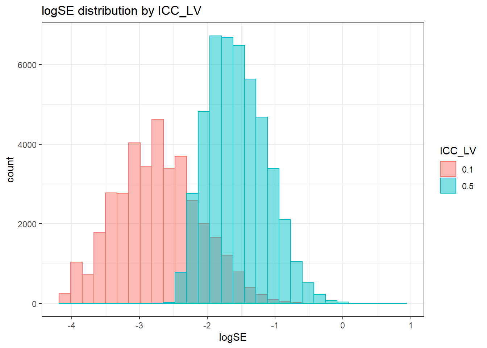
`stat_bin()` using `bins = 30`. Pick better value with `binwidth`.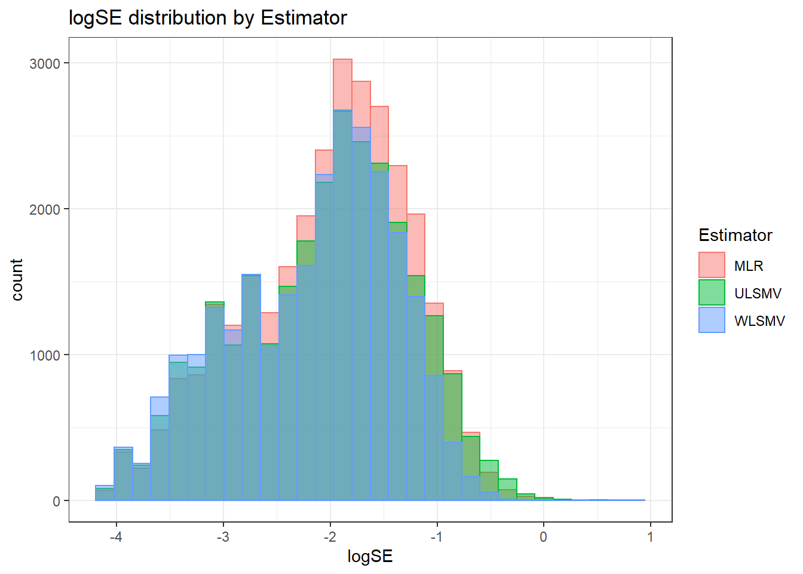
=============================
Tests of Homogeneity of Variance
Levenes Test: N1
Levene's Test for Homogeneity of Variance (center = "mean")
Df F value Pr(>F)
group 2 1490 <2e-16 ***
83507
---
Signif. codes: 0 '***' 0.001 '**' 0.01 '*' 0.05 '.' 0.1 ' ' 1
Levenes Test: N2
Levene's Test for Homogeneity of Variance (center = "mean")
Df F value Pr(>F)
group 3 44.7 <2e-16 ***
83506
---
Signif. codes: 0 '***' 0.001 '**' 0.01 '*' 0.05 '.' 0.1 ' ' 1
Levenes Test: ICC_OV
Levene's Test for Homogeneity of Variance (center = "mean")
Df F value Pr(>F)
group 2 3068 <2e-16 ***
83507
---
Signif. codes: 0 '***' 0.001 '**' 0.01 '*' 0.05 '.' 0.1 ' ' 1
Levenes Test: ICC_LV
Levene's Test for Homogeneity of Variance (center = "mean")
Df F value Pr(>F)
group 1 4522 <2e-16 ***
83508
---
Signif. codes: 0 '***' 0.001 '**' 0.01 '*' 0.05 '.' 0.1 ' ' 1
Levenes Test: Estimator
Levene's Test for Homogeneity of Variance (center = "mean")
Df F value Pr(>F)
group 2 44.4 <2e-16 ***
83507
---
Signif. codes: 0 '***' 0.001 '**' 0.01 '*' 0.05 '.' 0.1 ' ' 1ANOVA Results
model = as.formula('logSE ~ N1 + N2 + ICC_OV + ICC_LV + Estimator + N1:N2 + N1:ICC_OV + N1:ICC_LV + N1:Estimator + N2:ICC_OV + N2:ICC_LV + N2:Estimator + ICC_OV:ICC_LV + ICC_OV:Estimator + ICC_LV:Estimator')
fit <- aov(model, data = sdat)
fit.out <- summary(fit)
fit.out Df Sum Sq Mean Sq F value Pr(>F)
N1 2 3123 1562 52079.6 <2e-16 ***
N2 3 11953 3984 132862.0 <2e-16 ***
ICC_OV 2 8659 4330 144384.6 <2e-16 ***
ICC_LV 1 21863 21863 729055.7 <2e-16 ***
Estimator 2 214 107 3569.2 <2e-16 ***
N1:N2 6 14 2 75.6 <2e-16 ***
N1:ICC_OV 4 485 121 4042.9 <2e-16 ***
N1:ICC_LV 2 563 281 9383.1 <2e-16 ***
N1:Estimator 4 33 8 276.6 <2e-16 ***
N2:ICC_OV 6 15 2 83.0 <2e-16 ***
N2:ICC_LV 3 36 12 405.5 <2e-16 ***
N2:Estimator 6 93 16 519.5 <2e-16 ***
ICC_OV:ICC_LV 2 1433 717 23900.8 <2e-16 ***
ICC_OV:Estimator 4 16 4 135.2 <2e-16 ***
ICC_LV:Estimator 2 14 7 236.3 <2e-16 ***
Residuals 83460 2503 0
---
Signif. codes: 0 '***' 0.001 '**' 0.01 '*' 0.05 '.' 0.1 ' ' 1resultsList[["Level2-FactorCovariance"]] <- cbind(omega2(fit.out), p_omega2(fit.out))
resultsList[["Level2-FactorCovariance"]] omega^2 partial-omega^2
N1 0.0612 0.5550
N2 0.2343 0.8268
ICC_OV 0.1697 0.7757
ICC_LV 0.4285 0.8972
Estimator 0.0042 0.0787
N1:N2 0.0003 0.0053
N1:ICC_OV 0.0095 0.1622
N1:ICC_LV 0.0110 0.1835
N1:Estimator 0.0006 0.0130
N2:ICC_OV 0.0003 0.0059
N2:ICC_LV 0.0007 0.0143
N2:Estimator 0.0018 0.0359
ICC_OV:ICC_LV 0.0281 0.3640
ICC_OV:Estimator 0.0003 0.0064
ICC_LV:Estimator 0.0003 0.0056Level-2 item residual variances Standard Error
Assumption Checking
sdat <- filter(long_results, Parameter %like% "thetaB")
sdat <- sdat %>%
group_by(Replication, N1, N2, ICC_OV, ICC_LV, Estimator) %>%
summarise(logSE = mean(logSE))
# first, look at summary of logSE Estimates
boxplot(sdat$logSE)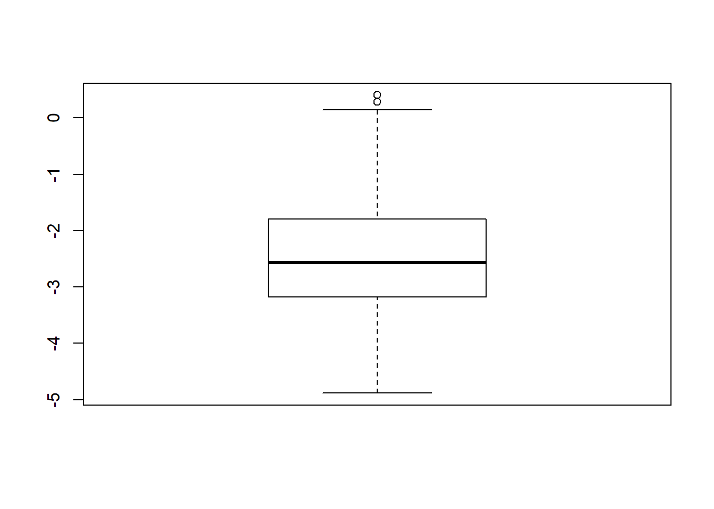
## model factors...
flist <- c('N1', 'N2', 'ICC_OV', 'ICC_LV', 'Estimator')
## Check assumptions
anova_assumptions_check(
sdat, 'logSE', factors = flist,
model = as.formula('logSE ~ N1 + N2 + ICC_OV + ICC_LV + Estimator + N1:N2 + N1:ICC_OV + N1:ICC_LV + N1:Estimator + N2:ICC_OV + N2:ICC_LV + N2:Estimator + ICC_OV:ICC_LV + ICC_OV:Estimator + ICC_LV:Estimator'))
=============================
Tests and Plots of Normality:
Shapiro-Wilks Test of Normality of Residuals:
Shapiro-Wilk normality test
data: res
W = 1, p-value <2e-16
K-S Test for Normality of Residuals:
One-sample Kolmogorov-Smirnov test
data: aov.out$residuals
D = 0.4, p-value <2e-16
alternative hypothesis: two-sided`stat_bin()` using `bins = 30`. Pick better value with `binwidth`.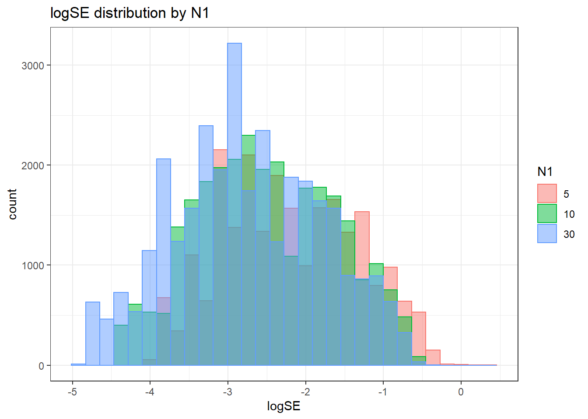
`stat_bin()` using `bins = 30`. Pick better value with `binwidth`.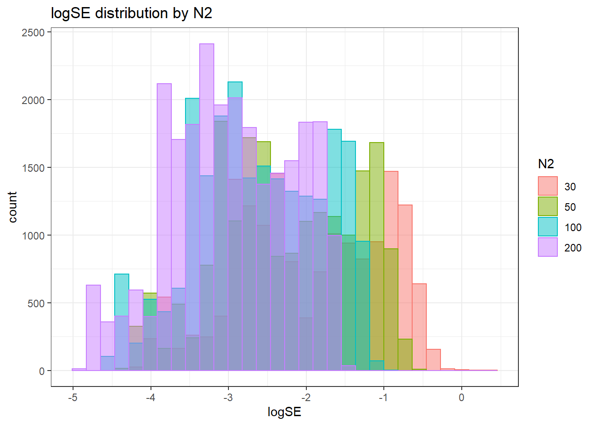
`stat_bin()` using `bins = 30`. Pick better value with `binwidth`.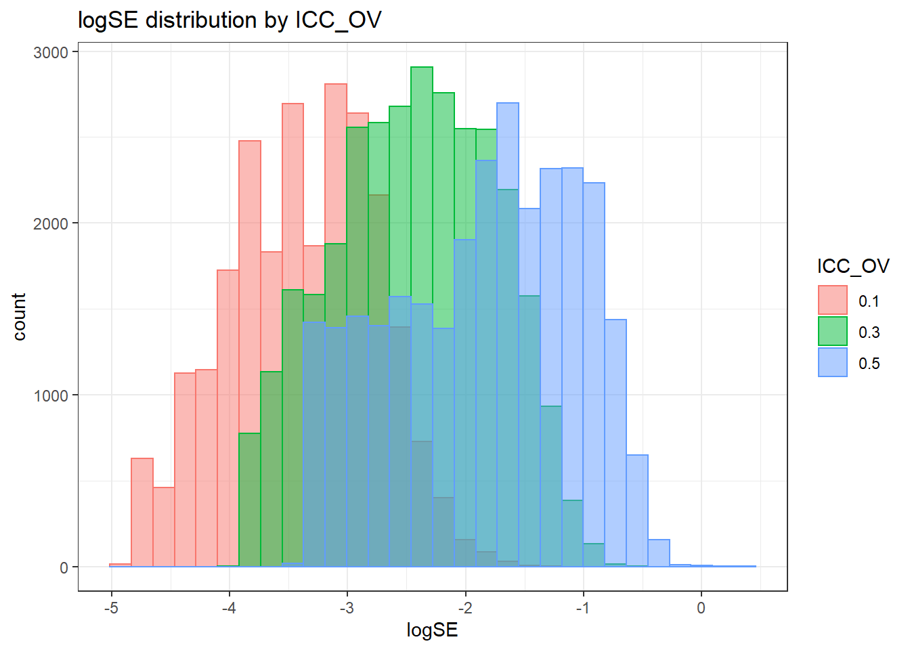
`stat_bin()` using `bins = 30`. Pick better value with `binwidth`.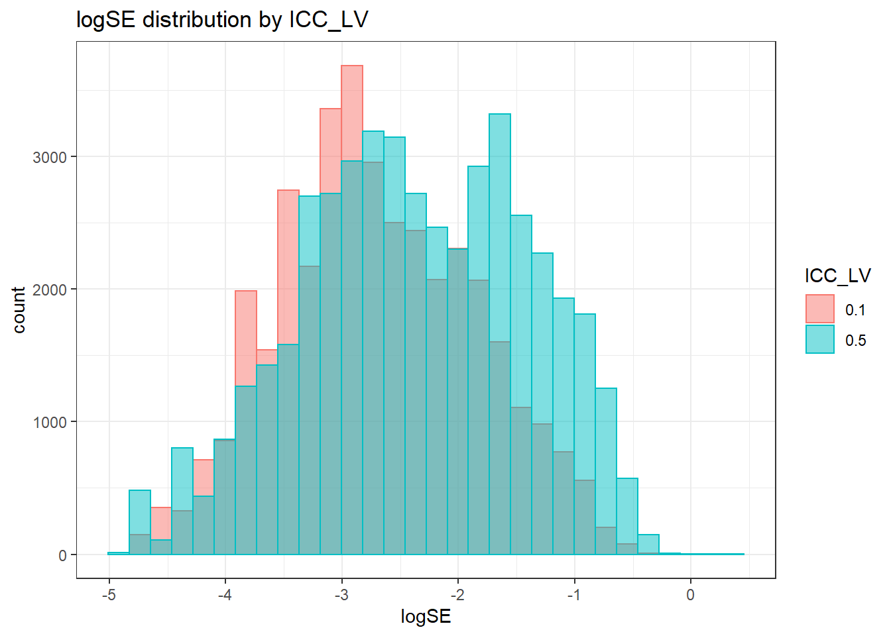
`stat_bin()` using `bins = 30`. Pick better value with `binwidth`.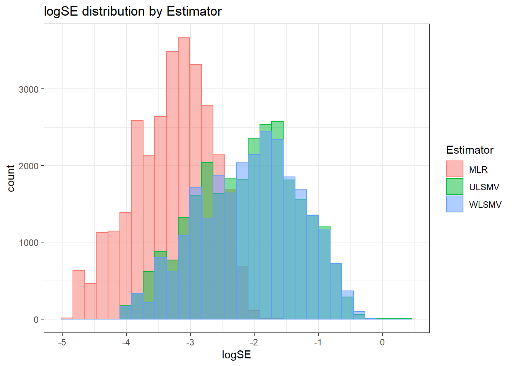
=============================
Tests of Homogeneity of Variance
Levenes Test: N1
Levene's Test for Homogeneity of Variance (center = "mean")
Df F value Pr(>F)
group 2 106 <2e-16 ***
83507
---
Signif. codes: 0 '***' 0.001 '**' 0.01 '*' 0.05 '.' 0.1 ' ' 1
Levenes Test: N2
Levene's Test for Homogeneity of Variance (center = "mean")
Df F value Pr(>F)
group 3 472 <2e-16 ***
83506
---
Signif. codes: 0 '***' 0.001 '**' 0.01 '*' 0.05 '.' 0.1 ' ' 1
Levenes Test: ICC_OV
Levene's Test for Homogeneity of Variance (center = "mean")
Df F value Pr(>F)
group 2 827 <2e-16 ***
83507
---
Signif. codes: 0 '***' 0.001 '**' 0.01 '*' 0.05 '.' 0.1 ' ' 1
Levenes Test: ICC_LV
Levene's Test for Homogeneity of Variance (center = "mean")
Df F value Pr(>F)
group 1 1092 <2e-16 ***
83508
---
Signif. codes: 0 '***' 0.001 '**' 0.01 '*' 0.05 '.' 0.1 ' ' 1
Levenes Test: Estimator
Levene's Test for Homogeneity of Variance (center = "mean")
Df F value Pr(>F)
group 2 1354 <2e-16 ***
83507
---
Signif. codes: 0 '***' 0.001 '**' 0.01 '*' 0.05 '.' 0.1 ' ' 1ANOVA Results
model = as.formula('logSE ~ N1 + N2 + ICC_OV + ICC_LV + Estimator + N1:N2 + N1:ICC_OV + N1:ICC_LV + N1:Estimator + N2:ICC_OV + N2:ICC_LV + N2:Estimator + ICC_OV:ICC_LV + ICC_OV:Estimator + ICC_LV:Estimator')
fit <- aov(model, data = sdat)
fit.out <- summary(fit)
fit.out Df Sum Sq Mean Sq F value Pr(>F)
N1 2 3926 1963 2.55e+05 <2e-16 ***
N2 3 12313 4104 5.33e+05 <2e-16 ***
ICC_OV 2 26486 13243 1.72e+06 <2e-16 ***
ICC_LV 1 237 237 3.08e+04 <2e-16 ***
Estimator 2 26567 13284 1.72e+06 <2e-16 ***
N1:N2 6 2 0 3.50e+01 <2e-16 ***
N1:ICC_OV 4 819 205 2.66e+04 <2e-16 ***
N1:ICC_LV 2 27 14 1.76e+03 <2e-16 ***
N1:Estimator 4 16 4 5.07e+02 <2e-16 ***
N2:ICC_OV 6 0 0 1.52e+00 0.17
N2:ICC_LV 3 5 2 2.34e+02 <2e-16 ***
N2:Estimator 6 137 23 2.96e+03 <2e-16 ***
ICC_OV:ICC_LV 2 28 14 1.80e+03 <2e-16 ***
ICC_OV:Estimator 4 395 99 1.28e+04 <2e-16 ***
ICC_LV:Estimator 2 570 285 3.70e+04 <2e-16 ***
Residuals 83460 643 0
---
Signif. codes: 0 '***' 0.001 '**' 0.01 '*' 0.05 '.' 0.1 ' ' 1resultsList[["Level2-ResidualCovariance"]] <- cbind(omega2(fit.out), p_omega2(fit.out))
resultsList[["Level2-ResidualCovariance"]] omega^2 partial-omega^2
N1 0.0544 0.8591
N2 0.1706 0.9503
ICC_OV 0.3670 0.9763
ICC_LV 0.0033 0.2692
Estimator 0.3681 0.9763
N1:N2 0.0000 0.0024
N1:ICC_OV 0.0113 0.5600
N1:ICC_LV 0.0004 0.0404
N1:Estimator 0.0002 0.0237
N2:ICC_OV 0.0000 0.0000
N2:ICC_LV 0.0001 0.0083
N2:Estimator 0.0019 0.1751
ICC_OV:ICC_LV 0.0004 0.0413
ICC_OV:Estimator 0.0055 0.3800
ICC_LV:Estimator 0.0079 0.4695Summary Table of Effect Sizes
tb <- cbind(resultsList[[1]], resultsList[[2]], resultsList[[3]], resultsList[[4]])
kable(tb, format='html') %>%
kable_styling(full_width = T) %>%
add_header_above(c('Effect'=1,'Factor Loadings'=2,'Level-1 Factor Covariance'=2,'Level-2 Factor (co)variance'=2,'Level-2 Item Residual Variance'=2))| omega^2 | partial-omega^2 | omega^2 | partial-omega^2 | omega^2 | partial-omega^2 | omega^2 | partial-omega^2 | |
|---|---|---|---|---|---|---|---|---|
| N1 | 0.197 | 0.888 | 0.483 | 0.894 | 0.061 | 0.555 | 0.054 | 0.859 |
| N2 | 0.314 | 0.927 | 0.430 | 0.882 | 0.234 | 0.827 | 0.171 | 0.950 |
| ICC_OV | 0.030 | 0.544 | 0.005 | 0.083 | 0.170 | 0.776 | 0.367 | 0.976 |
| ICC_LV | 0.000 | 0.000 | 0.001 | 0.014 | 0.428 | 0.897 | 0.003 | 0.269 |
| Estimator | 0.357 | 0.935 | 0.006 | 0.099 | 0.004 | 0.079 | 0.368 | 0.976 |
| N1:N2 | 0.001 | 0.044 | 0.002 | 0.035 | 0.000 | 0.005 | 0.000 | 0.002 |
| N1:ICC_OV | 0.005 | 0.178 | 0.003 | 0.055 | 0.010 | 0.162 | 0.011 | 0.560 |
| N1:ICC_LV | 0.007 | 0.213 | 0.001 | 0.016 | 0.011 | 0.184 | 0.000 | 0.040 |
| N1:Estimator | 0.009 | 0.259 | 0.004 | 0.070 | 0.001 | 0.013 | 0.000 | 0.024 |
| N2:ICC_OV | 0.001 | 0.028 | 0.001 | 0.021 | 0.000 | 0.006 | 0.000 | 0.000 |
| N2:ICC_LV | 0.000 | 0.010 | 0.000 | 0.004 | 0.001 | 0.014 | 0.000 | 0.008 |
| N2:Estimator | 0.001 | 0.049 | 0.003 | 0.049 | 0.002 | 0.036 | 0.002 | 0.175 |
| ICC_OV:ICC_LV | 0.007 | 0.219 | 0.000 | 0.002 | 0.028 | 0.364 | 0.000 | 0.041 |
| ICC_OV:Estimator | 0.026 | 0.509 | 0.002 | 0.028 | 0.000 | 0.006 | 0.006 | 0.380 |
| ICC_LV:Estimator | 0.021 | 0.462 | 0.001 | 0.012 | 0.000 | 0.006 | 0.008 | 0.470 |
## Print out in tex
print(xtable(tb, digits = 3), booktabs = T, include.rownames = T)% latex table generated in R 3.6.3 by xtable 1.8-4 package
% Wed Jun 10 21:44:59 2020
\begin{table}[ht]
\centering
\begin{tabular}{rrrrrrrrr}
\toprule
& omega\verb|^|2 & partial-omega\verb|^|2 & omega\verb|^|2 & partial-omega\verb|^|2 & omega\verb|^|2 & partial-omega\verb|^|2 & omega\verb|^|2 & partial-omega\verb|^|2 \\
\midrule
N1 & 0.197 & 0.888 & 0.483 & 0.894 & 0.061 & 0.555 & 0.054 & 0.859 \\
N2 & 0.314 & 0.927 & 0.430 & 0.882 & 0.234 & 0.827 & 0.171 & 0.950 \\
ICC\_OV & 0.030 & 0.544 & 0.005 & 0.083 & 0.170 & 0.776 & 0.367 & 0.976 \\
ICC\_LV & 0.000 & 0.000 & 0.001 & 0.014 & 0.428 & 0.897 & 0.003 & 0.269 \\
Estimator & 0.357 & 0.935 & 0.006 & 0.099 & 0.004 & 0.079 & 0.368 & 0.976 \\
N1:N2 & 0.001 & 0.044 & 0.002 & 0.035 & 0.000 & 0.005 & 0.000 & 0.002 \\
N1:ICC\_OV & 0.005 & 0.178 & 0.003 & 0.055 & 0.009 & 0.162 & 0.011 & 0.560 \\
N1:ICC\_LV & 0.007 & 0.213 & 0.001 & 0.016 & 0.011 & 0.183 & 0.000 & 0.040 \\
N1:Estimator & 0.009 & 0.259 & 0.004 & 0.070 & 0.001 & 0.013 & 0.000 & 0.024 \\
N2:ICC\_OV & 0.001 & 0.028 & 0.001 & 0.021 & 0.000 & 0.006 & 0.000 & 0.000 \\
N2:ICC\_LV & 0.000 & 0.010 & 0.000 & 0.004 & 0.001 & 0.014 & 0.000 & 0.008 \\
N2:Estimator & 0.001 & 0.049 & 0.003 & 0.049 & 0.002 & 0.036 & 0.002 & 0.175 \\
ICC\_OV:ICC\_LV & 0.007 & 0.219 & 0.000 & 0.002 & 0.028 & 0.364 & 0.000 & 0.041 \\
ICC\_OV:Estimator & 0.026 & 0.509 & 0.002 & 0.028 & 0.000 & 0.006 & 0.005 & 0.380 \\
ICC\_LV:Estimator & 0.021 & 0.462 & 0.001 & 0.012 & 0.000 & 0.006 & 0.008 & 0.469 \\
\bottomrule
\end{tabular}
\end{table}# ## Table of partial-omega2
# tb <- cbind(resultsList[[1]][,1, drop=F], resultsList[[2]][,1, drop=F], resultsList[[3]][,1, drop=F], resultsList[[4]][,1, drop=F])
#
# kable(tb, format='html') %>%
# kable_styling(full_width = T) %>%
# add_header_above(c('Effect'=1,'Factor Loadings'=2,'Level-1 Factor Covariance'=2,'Level-2 Factor (co)variance'=2,'Level-2 Item Residual Variance'=2))
#
# ## Print out in tex
# print(xtable(tb, digits = 3), booktabs = T, include.rownames = T)
#
#
# ## Table of omega-2
# tb <- cbind(resultsList[[1]][,1, drop=F], resultsList[[2]][,1, drop=F], resultsList[[3]][,1, drop=F], resultsList[[4]][,1, drop=F])
#
# kable(tb, format='html') %>%
# kable_styling(full_width = T) %>%
# add_header_above(c('Effect'=1,'Factor Loadings'=2,'Level-1 Factor Covariance'=2,'Level-2 Factor (co)variance'=2,'Level-2 Item Residual Variance'=2))
#
# ## Print out in tex
# print(xtable(tb, digits = 3), booktabs = T, include.rownames = T)
sessionInfo()R version 3.6.3 (2020-02-29)
Platform: x86_64-w64-mingw32/x64 (64-bit)
Running under: Windows 10 x64 (build 18362)
Matrix products: default
locale:
[1] LC_COLLATE=English_United States.1252
[2] LC_CTYPE=English_United States.1252
[3] LC_MONETARY=English_United States.1252
[4] LC_NUMERIC=C
[5] LC_TIME=English_United States.1252
attached base packages:
[1] stats graphics grDevices utils datasets methods base
other attached packages:
[1] xtable_1.8-4 kableExtra_1.1.0 cowplot_1.0.0
[4] MplusAutomation_0.7-3 data.table_1.12.8 patchwork_1.0.0
[7] forcats_0.5.0 stringr_1.4.0 dplyr_0.8.5
[10] purrr_0.3.4 readr_1.3.1 tidyr_1.1.0
[13] tibble_3.0.1 ggplot2_3.3.0 tidyverse_1.3.0
[16] workflowr_1.6.2
loaded via a namespace (and not attached):
[1] nlme_3.1-144 fs_1.4.1 lubridate_1.7.8 webshot_0.5.2
[5] httr_1.4.1 rprojroot_1.3-2 tools_3.6.3 backports_1.1.7
[9] R6_2.4.1 DBI_1.1.0 colorspace_1.4-1 withr_2.2.0
[13] tidyselect_1.1.0 curl_4.3 compiler_3.6.3 git2r_0.27.1
[17] cli_2.0.2 rvest_0.3.5 xml2_1.3.2 labeling_0.3
[21] scales_1.1.1 digest_0.6.25 foreign_0.8-75 rmarkdown_2.1
[25] rio_0.5.16 pkgconfig_2.0.3 htmltools_0.4.0 highr_0.8
[29] dbplyr_1.4.4 rlang_0.4.6 readxl_1.3.1 rstudioapi_0.11
[33] generics_0.0.2 farver_2.0.3 jsonlite_1.6.1 zip_2.0.4
[37] car_3.0-8 magrittr_1.5 texreg_1.36.23 Rcpp_1.0.4.6
[41] munsell_0.5.0 fansi_0.4.1 abind_1.4-5 proto_1.0.0
[45] lifecycle_0.2.0 stringi_1.4.6 yaml_2.2.1 carData_3.0-4
[49] plyr_1.8.6 grid_3.6.3 blob_1.2.1 parallel_3.6.3
[53] promises_1.1.0 crayon_1.3.4 lattice_0.20-38 haven_2.3.0
[57] pander_0.6.3 hms_0.5.3 knitr_1.28 pillar_1.4.4
[61] boot_1.3-24 reprex_0.3.0 glue_1.4.1 evaluate_0.14
[65] modelr_0.1.8 vctrs_0.3.0 httpuv_1.5.2 cellranger_1.1.0
[69] gtable_0.3.0 assertthat_0.2.1 gsubfn_0.7 xfun_0.14
[73] openxlsx_4.1.5 broom_0.5.6 coda_0.19-3 later_1.0.0
[77] viridisLite_0.3.0 ellipsis_0.3.1